Analysing logs using LogDNA¶
Generate application log entries¶
The Petclinic application was de deployed in the previous exercice. Let's articially create some traffic in order to generate log statements.
For simplicity, a script will be executed in api-gateway pod to send REST requests to all 4 service components of the petclinic application. Log entries will be generated for each service component.
Step 1 - Send requests to the sample application¶
Prior to sending the requests to the application, we will take a look at the pod logs and start watching the logs. This should provide an understanding of what comes in as log statements. To generate application log entries,
- Go back to CLI terminal and get a listing of pods. Then start watching the logs in separate CLI terminal sessions.
kubectl get podsWatch logs for each of those pods using the follwing command:$ kubectl get pods NAME READY STATUS RESTARTS AGE api-gateway-575f59b7d8-bjhp8 1/1 Running 0 3h2m customers-687749cfb-d2zhq 1/1 Running 0 3h2m vets-6bb6655b7f-v6ppc 1/1 Running 0 3h2m visits-784749c647-tdpvv 1/1 Running 0 3h2mFor instance the result of wathcing thekubectl logs -f <pod-name>api-gatewaypod should like this:$ kubectl logs -f api-gateway-575f59b7d8-bjhp8 6.4.jar!/, jar:file:/app.jar!/BOOT-INF/lib/jquery-3.1.1-1.jar!/, jar:file:/app.jar!/BOOT-INF/lib/bootstrap-3.3.7-1.jar!/, jar:file:/app.jar!/BOOT-INF/lib/angular-ui-router-1.0.3 .jar!/, jar:file:/app.jar!/BOOT-INF/lib/webjars-locator-core-0.35.jar!/, jar:file:/app.jar!/BOOT-INF/lib/slf4j-api-1.7.26.jar!/, jar:file:/app.jar!/BOOT-INF/lib/commons-lang3-3. 8.1.jar!/, jar:file:/app.jar!/BOOT-INF/lib/commons-compress-1.9.jar!/, jar:file:/app.jar!/BOOT-INF/lib/jackson-core-2.9.8.jar!/] . ____ _ __ _ _ /\\ / ___'_ __ _ _(_)_ __ __ _ \ \ \ \ ( ( )\___ | '_ | '_| | '_ \/ _` | \ \ \ \ \\/ ___)| |_)| | | | | || (_| | ) ) ) ) ' |____| .__|_| |_|_| |_\__, | / / / / =========|_|==============|___/=/_/_/_/ :: Spring Boot :: (v2.1.4.RELEASE) 2021-02-11 19:58:03.730 INFO 1 --- [ main] o.s.s.p.api.ApiGatewayApplication : Starting ApiGatewayApplication v2.1.4 on api-gateway-575f59b7d8-bjhp8 with PID 1 (/app.jar started by root in /) 2021-02-11 19:58:03.731 DEBUG 1 --- [ main] o.s.s.p.api.ApiGatewayApplication : Running with Spring Boot v2.1.4.RELEASE, Spring v5.1.6.RELEASE 2021-02-11 19:58:03.731 INFO 1 --- [ main] o.s.s.p.api.ApiGatewayApplication : The following profiles are active: common,docker ..... ..... 2021-02-11 19:59:24.943 DEBUG 1 --- [nio-8080-exec-3] o.s.w.s.handler.SimpleUrlHandlerMapping : Mapped to ResourceHttpRequestHandler ["classpath:/META-INF/resources/", "classpa th:/resources/", "classpath:/static/", "classpath:/public/", "/"] 2021-02-11 19:59:24.943 DEBUG 1 --- [nio-8080-exec-1] o.s.w.s.handler.SimpleUrlHandlerMapping : Mapped to ResourceHttpRequestHandler ["classpath:/META-INF/resources/", "classpa th:/resources/", "classpath:/static/", "classpath:/public/", "/"] 2021-02-11 19:59:24.949 DEBUG 1 --- [nio-8080-exec-2] o.s.w.s.handler.SimpleUrlHandlerMapping : Mapped to ResourceHttpRequestHandler ["classpath:/META-INF/resources/", "classpa th:/resources/", "classpath:/static/", "classpath:/public/", "/"] 2021-02-11 19:59:24.967 DEBUG 1 --- [nio-8080-exec-3] o.s.web.servlet.DispatcherServlet : Completed 200 OK - Go back to one of CLI terminal. Set the
HOSTto thePetclinicapplication URL.Run the follwing script to generate the log statements. This script will invoke the landing page, vets, owners and pet services in a loop.export HOST="https://petclinic.$INGRESS_SUBDOMAIN" echo $HOSTfor i in `seq 1 100` ; \ do \ echo -e "\n ======= Loop count: $i ========= \nCalling owners:" && \ wget -q -O - "${HOST}/api/customer/owners" && \ echo -e "\n Calling vets:" && \ wget -q -O - "${HOST}/api/vet/vets" && \ echo -e "\n Calling visits:" && \ wget -q -O - "${HOST}/api/visit/pets/visits?petId=7" && \ echo -e "\n Calling welcome:" && \ wget -q -O - "${HOST}/#\!/welcome" ; \ doneSwitch to the CLI sessions setup for watching the los to view the logging activity.======= Loop count: 2 ========= Calling owners: [{"id":1,"firstName":"George","lastName":"Franklin","address":"110 W. Liberty St.","city":"Madison","telephone":"6085551023","pets":[{"id":1,"name":"Leo","birthDate":"2010-09-07","type":{"id":1,"name":"cat"}}]},{"id":2,"firstName":"Betty","lastName":"Davis","address":"638 Cardinal Ave.","city":"Sun Prairie","telephone":"6085551749","pets":[{"id":2,"name":"Basil","birthDate":"2012-08-06","type":{"id":6,"name":"hamster"}}]},{"id":3,"firstName":"Eduardo","lastName":"Rodriquez","address":"2693 Commerce St.","city":"McFarland","telephone":"6085558763","pets":[{"id":4,"name":"Jewel","birthDate":"2010-03-07","type":{"id":2,"name":"dog"}},{"id":3,"name":"Rosy","birthDate":"2011-04-17","type":{"id":2,"name":"dog"}}]},{"id":4,"firstName":"Harold","lastName":"Davis","address":"563 Friendly St.","city":"Windsor","telephone":"6085553198","pets":[{"id":5,"name":"Iggy","birthDate":"2010-11-30","type":{"id":3,"name":"lizard"}}]},{"id":5,"firstName":"Peter","lastName":"McTavish","address":"2387 S. ......... ......... <body class="container"> <layout-nav></layout-nav> <div class="container-fluid"> <div class="container xd-container"> <div ui-view=""></div> </div> </div> <layout-footer></layout-footer> </body> </html>
Work with your logs via LogDNA¶
We are not ready to effectively analyze the application logs via LogDNA.
Step 1: Open LogDNA console¶
Open the LogDNA console like we did in the prevous lab.
-
LogDNA console displays everything by default.
-
LogDNA live-streams all log entries by default. You may turn OFF/ON
LIVElog stream via theLIVEtoggle button at the bottom right corner.
{kind=link}
Step 2: Search for specific terms in logs¶
If you know what you are looking for, it's easy and convenient to search log entries in LogDNA.
-
In the
Searchinput box located at the bottom of the page in the LogDNA UI, enterGET "/owners"and press ENTER. -
Review the search result. All remaining log entries contains string
GET "/owners". -
Select any log entry and expand it by click the arraw in the front of the line.
-
This displays detail information of the log entry.
-
Select
View in context. -
The log line will be displayed in context of other log lines from that host, app, or both. This information is helpful when troubleshooting a problem.
-
Select
EVERYTHINGin the top-left corner to clear the searching criteria and restore all log entries. -
In the
Searchinput box located at the bottom of the page in the LogDNA UI, enterlevel:errorand press ENTER. -
Review the search result and only
errorlog entries remain. -
Select
EVERYTHINGin the top-left corner to clear the searching criteria and restore all log entries. -
Enter
2 mins agoin theJump to timeframeinput box and press ENTER. -
LogDNA jumps to a specific timeframe, Click the icon next to the input box to find the other time formats within your retention period.
-
Select the
Toggle Viewer Toolsicon at the bottom-right.- Enter
erroras your highlight term in the first field and press ENTER. - Enter
containeras your highlight term in the second field and press ENTER. - Click the
Toggle Viewer Toolsicon to close the pop-up window.
- Enter
-
Click on
Toggle Timelineicon to see log entries at a specific time of a day.
{kind=link}
{kind=link}
{kind=link}
{kind=link}
{kind=link}
{kind=link}
Step 3 - Filter logs for a specific container¶
You can filter logs by tags, sources, containers or levels.
- Tags: related to IKS clusters
- Sources: related to IKS pods
- Containers: related to IKS containers. Since one container typically runs one microservice per cloud native development best practice, each container should represent one microservice. For example,
customerscontainer representscustomersservice component. - Levels: related to log level, for example error or debug.
To filter logs,
-
On LogDNA UI, select
EVERYTHINGin the top left corner to clear the searching criteria and restore all log entries. -
Select
Tagsdropdown list on the top. You can filter log entries related to a single cluster or a set of clusters. For this exercise, you don't have to change anything. -
Select
Sourcesdropdown list, you may filter log entries related to one Kubernetes pod or a set of pods. For this exercise, you don't have to change anything. -
Select
Appsdropdown list, you may filter log entries related to one Kubernetes container or a set of containers. -
Select
Customerscheckbox under theContainerssection andApply. Now, you see log entries forCustomersservice component only. Most of the entries are forDEBUGpurpose. -
Select
Levelsdropdown list, you may filter log entries related to one log level or a set of log levels. -
Select everything except
DEBUGlog level andApply. -
You may see no log entry or a few lines of log entries, depending on your log entries.
{kind=link}
{kind=link}
Step 4 - Create a new view¶
You may create a new view to save your current filter.
-
Click
Unsaved Viewon the LogDNA UI and selectSave as new view. -
In the
Namefield, enterMy CUSTOMERS service component. -
Select
Save View.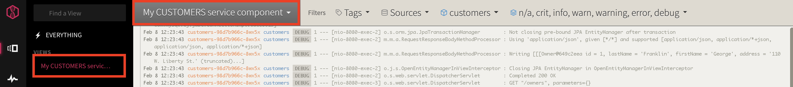
Step 5 - Visualize logs with graphs and breakdowns¶
In this section, you will create a board and then add a graph with a breakdown to visualize the app level data. A board is a collection of graphs and breakdowns.
-
In the left pane, select the
Boardsicon and then selectNEW BOARD. -
Click
Editicon (Pencilicon next to theNew Boardtitle) on the top bar. -
In the
Namefield, enterDebug Board. ClickSave. -
Click
Add Graph. -
Under the
Graph a fieldsection, selectlevelin the first field. -
Second field
Field Valueappears. -
Select
debugin theField Valuefield.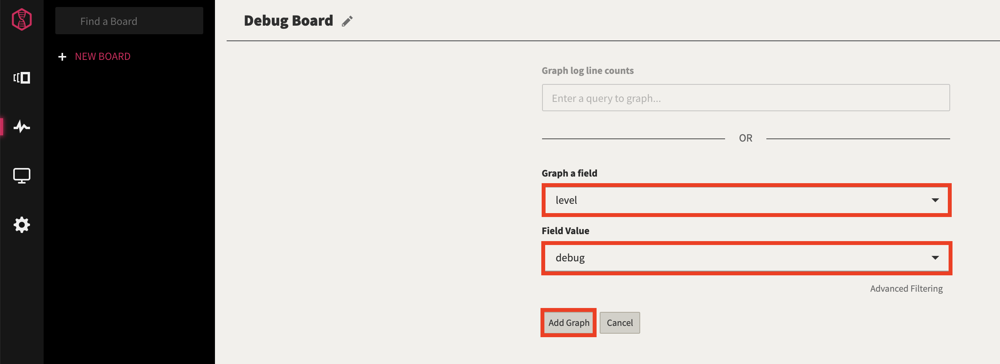
-
Click
Add Graph. -
Countsis selected as your metric by default. The graph shows the number of log entries in the interval over last 24 hours.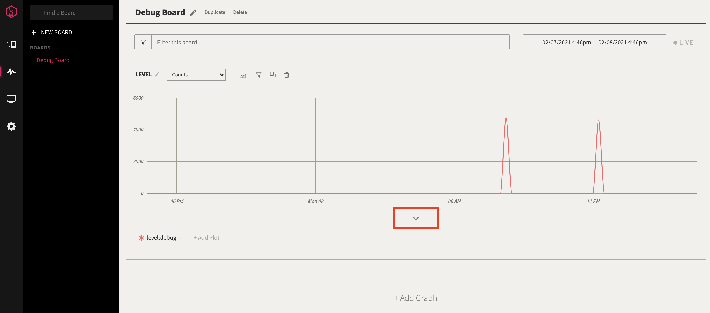
-
Extend the graph by clicking on the downn-arrow below the graph.
-
Select
Histogramas yourbreakdown type.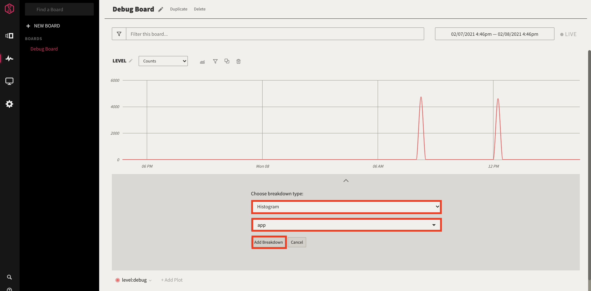
-
Choose
appin the second field. -
Select
Add Breakdownto see a breakdown with all the apps you logged.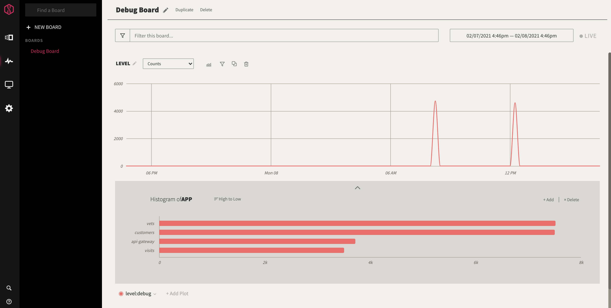
Step 6 - Alerts¶
You can trigger alerts in LogDNA whenever log lines appear in a custom view. The sample alert configuration in this section sends an email for every 3 new log entries that meet searching criteria.
Step 6.1 - Create custom view¶
To create an alert in LogDNA,
-
Navigate to the homepage of the LogDNA.
-
Select
EVERYTHING. -
Enter
GET "/owners"in theSearchfield and press ENTER. -
Click
Unsaved Viewbutton on the top-left and selectSave as new view. -
Enter
REST Callin theNamefield. -
Select
Save Viewbutton.
Step 6.2 - Create alert¶
-
Select
Settingsin the left pane. -
Select
ALERTStab. -
Select
Add Presetbutton. -
Enter
customer-api-calledas thePreset name.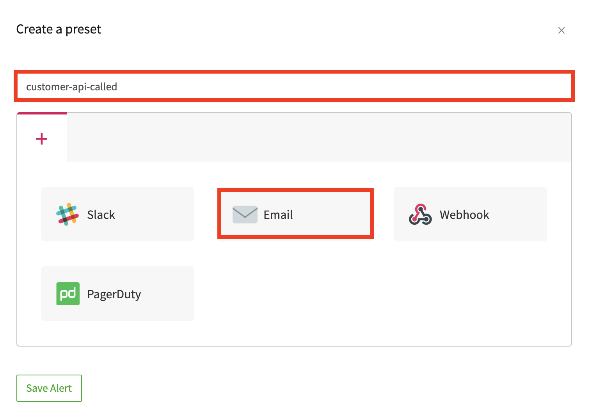
-
Select
Emailoption. -
Triggers the alert when there are
3 Linesappears in30 seconds. -
Send an alert
At the end of 30 seconds. -
Turn on
Custom scheduleand review the settings. Make change if necessary. -
Enter your email address.
-
Select your
Timezone.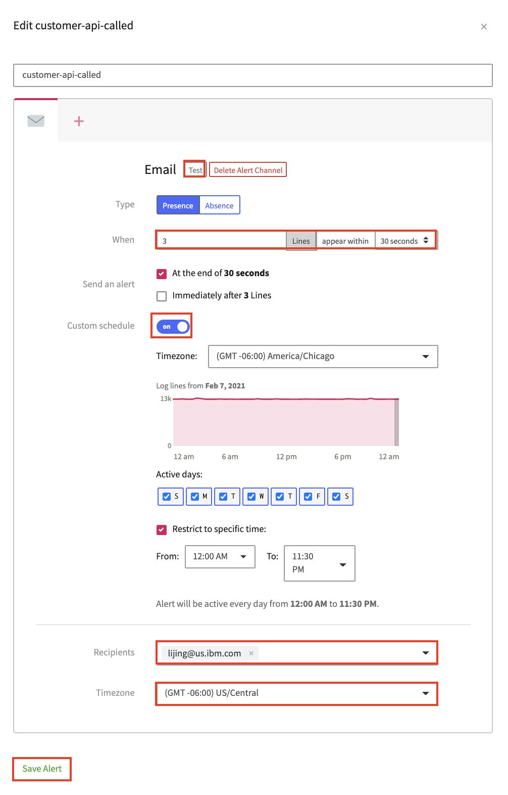
-
Click
Testbutton next to theEmail. -
You should receive an email from
LogDNA Alertswith the following testing contents.Test View 🔔 2 test lines matched Feb 08 17:45:56 logdna alert_tester This is where your lines will show up Feb 08 17:45:56 logdna alert_tester After matching at least 3 lines in a 30 second period, we'll send an alert to this email with all the matched lines -
Save Alert.
Step 6.3 - Attach alert and custom view¶
To link alert and custom view in LogDNA,
-
Select
Viewstab in the left pane. -
Select
REST Callcustom view.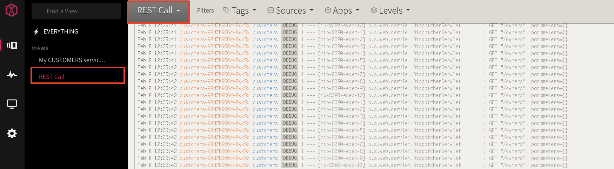
-
Click the
REST Calldropdown menu on the top-left. -
Select
Attach an alertoption.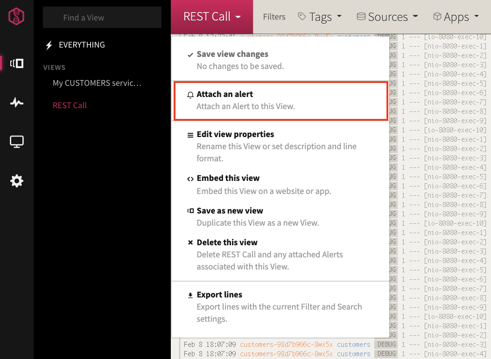
-
Select
customer-api-calledalert.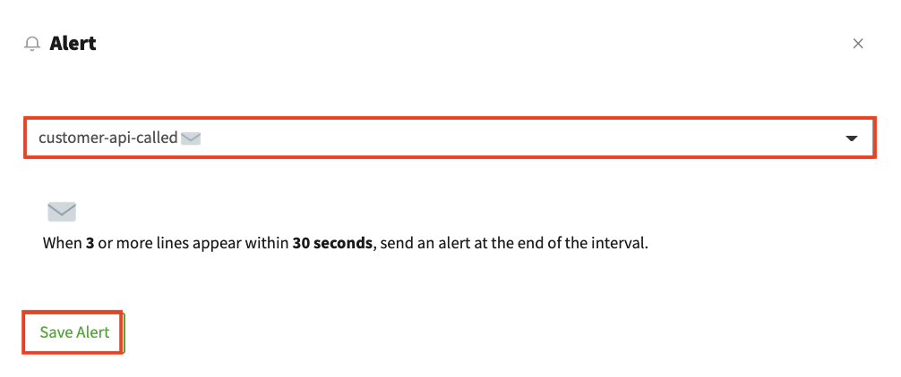
-
Save Alert.
Step 6.4 - Trigger alert¶
To trigger the LogDNA alert, you'll generate additional application log entries.
-
Go back to
IBM Cloud Shellterminal. -
Copy/paste and Execute the following command in the pod. The script sends 3 requests to customer microservice.
for i in `seq 1 3` ; \ do \ echo -e "\n ======= Loop count: $i ========= \nCalling customer owners:" && \ wget -q -O - "${HOST}/api/customer/owners" && \ done -
Verify you received an email from
LogDNA Alerts.REST Call 🔔 (end of duration) 3 lines matched within 30 seconds Feb 08 19:14:01 customers-98d7b966c-8wx5x customers [DEBUG] 1 --- [io-8080-exec-10] o.s.web.servlet.DispatcherServlet : GET "/owners", parameters={} Feb 08 19:14:01 customers-98d7b966c-8wx5x customers [DEBUG] 1 --- [nio-8080-exec-8] o.s.web.servlet.DispatcherServlet : GET "/owners", parameters={} Feb 08 19:14:01 customers-98d7b966c-8wx5x customers [DEBUG] 1 --- [nio-8080-exec-9] o.s.web.servlet.DispatcherServlet : GET "/owners", parameters={}
Step 7 - Review the log format¶
When you launch the IBM Log Analysis with LogDNA web UI, log entries are displayed in a predefined format. You can modify how the log entries are displayed.
Note: Configuration changes of the log format in this section will affect all defined views. It's possible to change log format for individual view.
-
Select the
Settingsicon in the left pane. -
Select
USER PREFERENCES. -
Select
Log Formattab.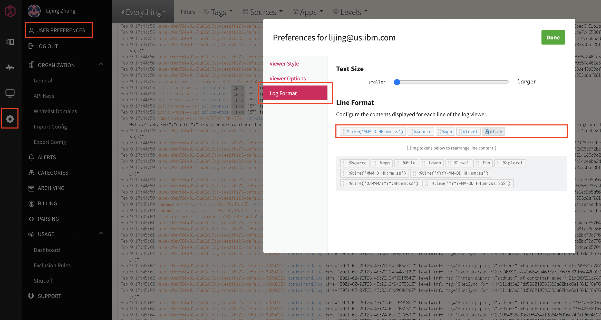
-
Review the default log format and available log components. Do not make any change for this exercise.
- Change the log viewer text size by using the slider.
- To add items to log view, drag the available items from the bottom line to the top line.
- To rearrange the order of the items, drag and drop the items in the top line until you have your desired view.
Step 8 - Configure exclusion rules¶
In an IBM Log Analysis with LogDNA instance, you can configure exclusion rules through the LogDNA web UI to stop logs from counting against your data usage quota and from being stored for search.
Step 8.1 - Create exclusion rules¶
-
Select the
Settingsicon in the left pane. -
Select
Usageand thenExclusion Rules. -
Click
Add Rulebutton. The Create Rule section opens. -
Enter
myExclusionRulein the fieldWhat is this rule for?. -
In the
Appsfield, selectcustomers. -
In the
Queryfield, enterlevel:debug. The query exludes the Debug log entries.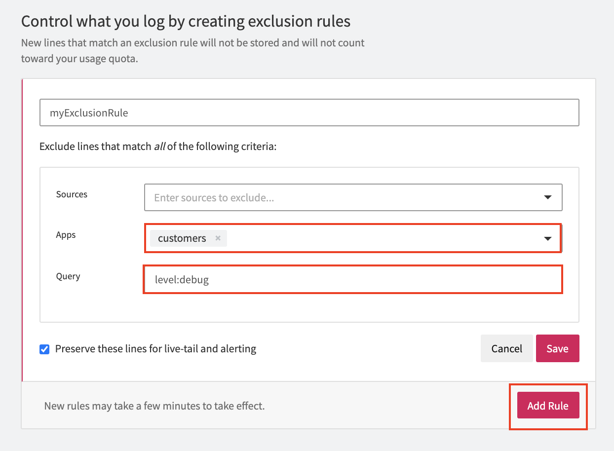
-
Select
Preserve these lines for live-tail and alertingto show through the live tail the log lines that are excluded. Notice that you can still use these log lines to set up an alert. -
Click
Save.
Step 8.2 - Test exclusion rules¶
To test the exclusion rule,
-
Go back to the LogDNA homepage.
-
Select
EVERYTHING. -
Click
Appsdropdown and filter the logs by selectingcustomerscheckbox underContainers. -
Apply. -
Go to
IBM Cloud Shellterminal. -
Copy/paste and Execute the following command in the pod.
for i in `seq 1 3` ; \ do \ echo -e "\n ======= Loop count: $i ========= \nCalling customer owners:" && \ wget -q -O - "${HOST}/api/customer/owners" && \ done -
Go back to LogDNA UI, you should receive no new log entry by looking at the timestamp of the last log entry. This confirms that the newly generated log entries do not count against your data usage.
-
Verify you received an email from
LogDNA Alerts. This confirms that you can still receive alert based on the newly generated log entries although they don't count against your data usage.
Step 8.3 - Delete exclusion rules¶
The exclusion rule myExclusionRule should be deleted as it was created fopr demostration reason. Otherwise, your LogDNA may not as you expect.
-
Select the
Settingsicon in the left pane. -
Select
Usageand thenExclusion Rules. -
Click
Removelink right themyExclusionRule.Note: you have to move mouse cursor into the
myExclusionRulearea to the see theRemovelink. -
Confirm and click
Yes, delete.